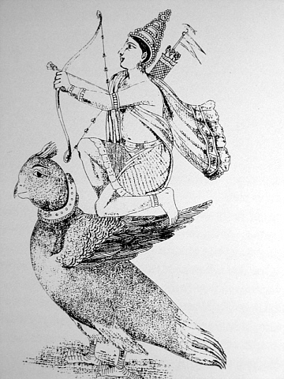

mailto:payer@payer.de
Zitierweise | cite as:
Payer, Alois <1944 - >: Sanskritkurs. -- 5. Lektion 5. -- Fassung vom 2010-03-01. -- URL: http://www.payer.de/sanskritkurs/lektion05.htm
Erstmals hier publiziert: 2008-11-17
Überarbeitungen: 2010-03-01 [Verbesserungen]; 2008-11-24 [Ergänzungen]; 2008-11-23 [Verbesserungen]; 2008-11-20 [Verbesserungen]
Anlass: Lehrveranstaltungen 1980 - 1984
©opyright: Dieser Text steht der Allgemeinheit zur Verfügung. Eine Verwertung in Publikationen, die über übliche Zitate hinausgeht, bedarf der ausdrücklichen Genehmigung des Verfassers
Dieser Text ist Teil der Abteilung Sanskrit von Tüpfli's Global Village Library
Falls Sie die diakritischen Zeichen nicht dargestellt bekommen, installieren Sie eine Schrift mit Diakritika wie z.B. Tahoma.
Die Devanāgarī-Zeichen sind in Unicode kodiert. Sie benötigen also eine Unicode-Devanāgarī-Schrift.
Die Bildung von Wortzusammensetzungen in sehr großem Umfang ist ein Charakteristikum des Sanskrit.
Die wichtigsten Bildungsformen von Komposita sind:
(Zu den beiden letztgenannten siehe später!)
ghaṭakapadāni n. pl.= घटकपदानि = Glieder eines Kompositums
vigrahavākyam n. = विग्रहवाक्यम् = Auflösung eines Kompsositums
nityasamāsaḥ m. = नित्यसमासः 0 Kompositum, für das es kein vigrahavākya gibt oder dessen vigrahavākya nicht möglich ist mit den Wörtern des Kompositums.
aluksamāsaḥ m. = अलुक्समासः = Kompositum, in dem das Vorderglied eine Kasusendung behält
luksamāsaḥ m. = लुक्समासः = Kompositum, dessen Vorderglieder ohne Kasusendungen sind (der Normlfall)
madhyamapadalopī m. = मध्यमपदलोपी = Kompositum, in dem ein oder mehrere mittlere Glieder ausgelassen werden
Die kopulativen Komposita dienen zur Verknüpfung von grammatisch gleichartigen, koordinierten Gliedern (Substantiven oder Adjektiven).
Ein Dvandva bezeichnet:
Im ersten Fall (Itaretaradvandva) erhält das Dvandva das grammatische Geschlecht seines letzten Gliedes und die Endungen des Dual, wenn es sich um zwei Dinge usw. handlet, bzw. des Plurals, wenn es sich um mehr als zwei Dinge usw. handelt. Auch Singularendungen sind zulässig. Im zweiten Fall (Samāhāradvandva) ist das Dvandva im Allgemeinen ein Neutrum, unabhängig vom Geschlecht seines letzten Gliedes, und steht im Singular. |
| Die Auflösung eines Dvandva erfolgt mit "und" (ca = च), gelegentlich mit "oder" (vā = वा) oder "je". |
Zu den Dualdvandva siehe später!
Die Vorderglieder von Komposita (nicht nur Dvandvas) haben in der Regel die Form des unveränderten Nominalstamms. Die einzelnen Glieder von Komposita werden nach den Regeln des Satzsandhi verbunden (d.h. des Sandhi, den wir bisher kennengelernt haben, im Gegensatz zum Wortsandhi, der innerhalb des Wortes vor formativen Elementen Anwendung findet.
Beispiele für Pluraldvandva:
brāhmaṇa-kṣatriya-vaiśya-śūdrāḥ = ब्राह्मणक्षत्रियवैश्यशूद्राः
= brāhmaṇāḥ kṣatriyā vaiśyāḥ śūdrāś ca = ब्राह्मणाः क्षत्रिया वैश्याः शूद्राश्च = "Brahmanen, Kṣatriyas, Vaiśyas und Śūdras"
oder = brāhmaṇaḥ kṣatriyo vaiśyaḥ śūdraś ca = ब्राह्मणः क्षत्रियो वश्यः शूद्रश्च = "(ein/der) Brahmane, Kṣatriya, Vaiśya und Śūdra"
kavi-guravaḥ = कविगुरवः
= kavayo guravaś ca = कवयो गुरवश्च "Dichter und Lehrer" (Plur.) ("Ein Dichter und ein Lehrer" müsste im Dual stehen!)
Für die Reihenfolge der Glieder in einem Dvandva gelten u.a. folgende Regeln:
Wo zwei der drei letztgenannten Vorschriften gleichzeitig in Frage kommen können, soll immer die später gegebene Regel befolgt werden.
(Beispiele von Dualdvandva zu diesen Regeln bei Kielhorn, Grammatik § 570).
Lernen Sie folgende Wörter:
abhiniveṣa m. = अभिनिवेष : Neigung zu, Hartnäckigkeit, Bestehen auf; speziell: Anhänglichkeit an den Leib als sei er etwas Eigenes
kāma m. = काम : Wunsch, Begehren, erwünschte Gabe, Sinnenlust, Liebe; Liebesgott Kāma

Abb.: Gott Kāma = kāmadeva = कामदेव, 18. Jhdt.
[Bildquelle: Wikipedia, Public domain]
krodha m. = क्रोध : Zorn
kleśa m. = क्लेश : Qual, Plage
trayī f. = त्रयी : Dreizahl; insbes. die drei Veden (Ṛgveda, Sāmaveda, Yajurveda)
daṇḍanīti f. = दण्डनीति : Politik (ein Tatpuruṣa aus daṇḍa m. = = "Stock, Macht, Herrschaft, Strafe" und nīti f. "(rechte) Führung")
dvijāti 3 = द्विजाति = dvija 3 = द्विज
dveṣa m. = द्वेष : Hass
maitrī f. = मैत्री : Freundschaft, Freundlichkeit, freundliches Wohlwollen
rāga m. = राग : (rote) Farbe, Leidenschaft, Liebe
lobha m. = लोभ : Gier, Habsucht
varṇa m. = वर्ण : Farbe, Gattung, Stand
vārttā f. = वार्त्ता : Erwerb, Ökonomie (Wirtschaft)
vidyā f. = विद्या : Wissen, Wissenschaft
dazu: avidyā f. = अविद्या : Unwissenheit, Nichtwissen
ca = च : und (wird dem Wort, welches es anknüpft, nachgestellt; werden mehrere Wörter durch ca angeknüpft, steht es hinter dem ersten Wort dieses Wortkomplexes; werden mehrere Wörter verknüpft., kann ca hinter jedem einzelnen stehen, besser aber nur hinter dem ersten Wort des letzten Verknüpfungsgliedes: brāhmaṇāḥ kṣatriyā vaiśyāḥ śūdrāś ca = ब्राह्मणाः क्षत्रिया वैश्याः शूद्राश्च)
ca ... ca = च ... च : sowohl als auch
A) Übersetzen Sie folgende Sätze und Komposita und lösen Sie die darin vorkommenden Dvandvas in Sanskrit auf:
1. catvāro varṇā brāhmaṇakṣatriyavaiśyaśūdrāḥ. (Āpastambīyadharmasūtra I,1,1,4 = Vāsiṣṭhadharmaśāstra II,1)
चत्वारो वर्णा ब्राह्मणक्षत्रियवैश्यशूद्राः ||
Erklärung catvāras = चत्वारस् = "vier"
2. trayo varṇā dvijātayo brāhmaṇakṣatriyavaiśyāḥ. (Vāsiṣṭhadharmaśāstra II,1)
त्रयो वर्णा द्विजातयो ब्राह्मणक्षत्रियवैश्याः ||
Erklärung: trayas = त्रयस् = "drei"
3. sāmavedargvedayajurvedās trayī. (Kauṭilīya-arthaśāstra 1.3.1.) (in gutem Sanskrit: sāmārgyajurvedās trayī)
सामवेदर्ग्वेदयजुर्वेदास्त्रयी ||
(in gutem Sanskrit: सामार्यजुर्वेदास्त्रयी)
4. Die drei Feinde des Menschen, die das Tor zur Hölle bilden (Viṣṇusmṛti 33,1+6): kāmakrodhalobhāḥ
कामक्रोधलोभाः ||
5. maitrīkaruṇāmuditopekṣāś catvāro brahmavihārāḥ.
मैत्रीकरुणामुदितोपेक्षाश्चत्वारो ब्रह्मविहाराः ||
Erklärung: brahmavihāra: "Verweilungszustände Brahmas", auch "Unermessliche" genannt: unbegrenzte Haltungen. Sie stellen buddhistische Meditationsformen dar, mit denen der Meditierende allmählich, schrittweise die ganze Wirklichkeit "durchstrahlt". Auch im Yoga (Yogasūtra 1,33) spielen diese vier eine Rolle beim Zurruhekommen des Bewusstseins.
6. avidyāsmitārāgadveṣābhiniveṣāḥ pañca kleśāḥ. (Yogasūtra 2,3)
अविद्यास्मितारागद्वेषाभिनिवेषाः पञ्च क्लेशाः ||
Erklärung: pañca = "fünf"
7. ānvīkṣikītrayīvārttādaṇḍanitayo vidyāḥ. (Nach Kauṭilīya-arthaśāstra 1.2.1.)
आन्वीक्षिकीत्रयीवार्त्तादण्डनितयो विद्याः ||
A) Übersetzen Sie:
1. vidyā vārttā.
विद्या वार्त्ता |
2. brāhmaṇaḥ kṣatriyo vaiśyaś ca trayo varṇā dvijātayaḥ.
ब्राह्मणः क्षत्रियो वैश्यअश्च त्रयो वर्णा द्विजातयः |
3. dvijā vaiśyāḥ. (2 Möglichkeiten)
द्विजा वैश्याः |
B) Setzen Sie die entsprechende Form ein:
(dvija, sādhu, kavi) ... rāmaḥ
(द्विज, साधु, कवि) ... रामः |
(devī) ... indrāṇī
(देवी) ... इन्द्राणी |
dvijātayas ... (vaiśyā, kṣatriya)
द्विजातयस् ... (वैश्या, क्षत्रिय) |
C) Lösen Sie das Kompositum in folgendem Satz in Sanskrit auf und bilden Sie mit dieser aufgelösten Form denselben Satz:
sāmargyajurvedās trayī.
सामर्ग्यजुर्वेदास्त्रयी |
D) Übersetzen Sie auf zwei Weisen ins Sanskrit (einmअl mit einem Kompositum, einmal ohne):
"Verweilungszustände Brahmas" sind: freundliches Wohlwollen, Mitgefühl, Mitfreude, Gleichmut.
Zu Lektion 6